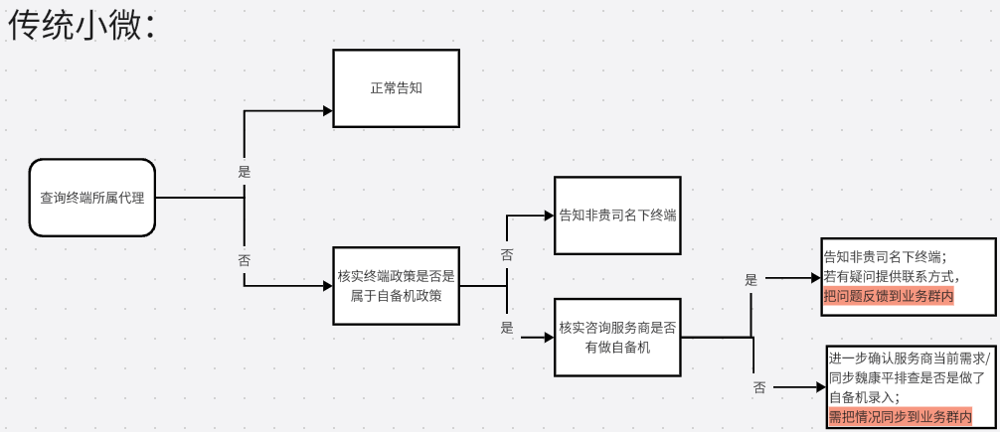

终端所属查询处理规范

服务商咨询终端所属问题排查流程：
1.判断终端是否是咨询的服务商所属名下
2.判断终端是否是属于自备机政策
3.判断进线咨询的服务商是否有做自备机政策
若核实是自备机且进线咨询的服务商未有自备政策或服务商对此有异议的情况下，先将问题反馈出来，需组长/主管知悉！
一户一码：
小微商户补充材料分两种情况：
如果按小微商户补充材料，目前暂时还不会变成一机一码，后续根据公司决策调整走
如果按标准商户补充材料(营业执照认证)，是会变成一机一码，且商户交易名称会变成上传的商户名称分期码：
“分期码”是支付宝与国通联合开发，供消费者使用花呗分期以及银行卡分期的专属支付码牌，消费者通过扫描分期码进行的花呗分期和信用卡分期交易，能够享受专属分期活动。分期码只支持支付宝APP扫码支付。
分期码的交易不影响合作伙伴现有收单政策。分期码码牌将由支付宝负责制作与邮寄，分期码印刷时已经与商户绑定，码牌收到后可立即进行交易。
星驿付分期码交易目前是有给到服务商奖励，t+2月结算
- 点击查看
- B端运营知识库
暂无头绪
终端非我司渠道下，现在是否可以切换到我司渠道
支持，星POS可以在银联通道微信-定制资料报备-输入我司渠道号（若报备失败查看定制资料报备中所选的行业是否有误·）
D0问题：
四川分公司属地群如遇咨询如何开启D0，不要 不要 不要！给出操作路径让商户自行申请，否则不享受D0补贴，按照一下方式引导联系对应人员：
巴中：申请秒到需要上报商户名单给区县管理员，由管理员统一上报给市局公司提报给我司进行配置。
乐山：艾特程洪林收集即可。
四川其余地市无特殊要求，即遵循巴中规则引导联系区县管理员进行。返厂问题
属地群终端故障不能直接引导返厂流程，需要引导找分公司处理！